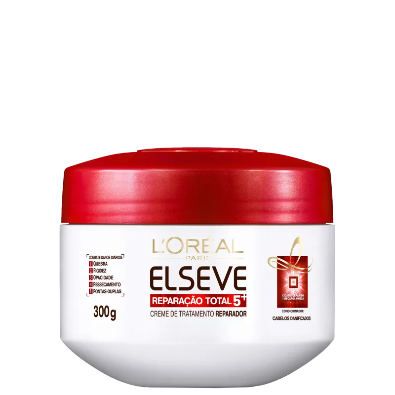

Máscara Elseve Reparação Total
A Máscara Elseve Reparação Total é formulada para restaurar a vitalidade dos cabelos danificados. Com uma combinação de ingredientes poderosos, essa máscara age profundamente na fibra capilar, proporcionando nutrição intensa e um brilho radiante. Ideal para cabelos secos e quebradiços, esta máscara é um passo essencial na sua rotina de cuidados capilares.
Para usar a máscara, siga estas etapas:
- Aplique nos cabelos molhados, após o shampoo.
- Deixe agir por 5 minutos.
- Enxágue abundantemente com água morna.
- Use uma vez por semana ou conforme necessário.